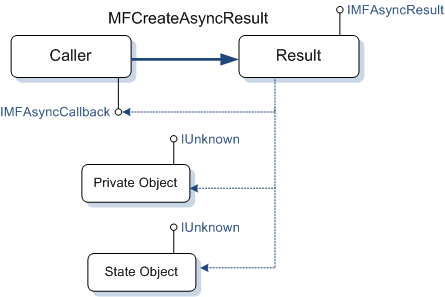
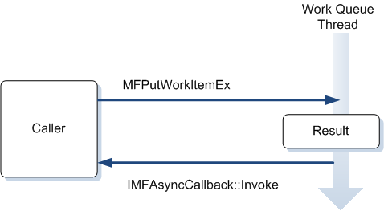
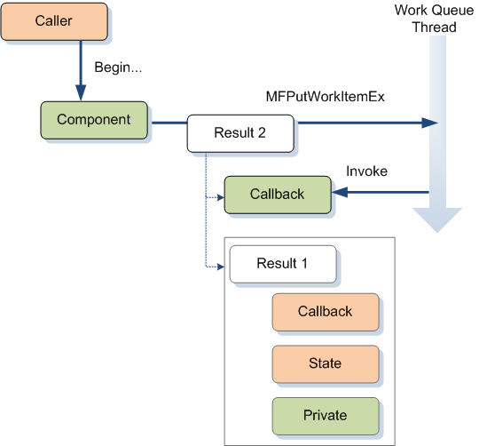

This topic describes how to implement an asynchronous method in Microsoft Media Foundation.
Asynchronous methods are ubiquitous in the Media Foundation pipeline. Asynchronous methods make it easier to distribute work among several threads. It is particularly important to perform I/O asynchronously, so that reading from a file or network does not block the rest of the pipeline.
If you are writing a media source or media sink, it is crucial to handle asynchronous operations correctly, because your component's performance has an impact on the entire pipeline.
[!Note]
Media Foundation transforms (MFTs) use synchronous methods by default.
Â
In Media Foundation, there is a close relationship between Asynchronous Callback Methods and Work Queues. A work queue is an abstraction for moving work from the caller's thread to a worker thread. To perform work on a work queue, do the following:
Implement the IMFAsyncCallback interface.
Call MFCreateAsyncResult to create a result object. The result object exposes the IMFAsyncResult. The result object contains three pointers:
The last two pointers can be NULL. Otherwise, use them to hold information about the asynchronous operation.
Call MFPutWorkItemEx to queue to the work item.
The work-queue thread calls your IMFAsyncCallback::Invoke method.
Do the work inside your Invoke method. The pAsyncResult parameter of this method is the IMFAsyncResult pointer from step 2. Use this pointer to get the state object and private object:
As an alternative, you can combine steps 2 and 3 by calling the MFPutWorkItem function. Internally, this function calls MFCreateAsyncResult to create the result object.
The following diagram shows the relationships between the caller, the result object, the state object, and the private object.

The following sequence diagram shows how an object queues a work item. When the work-queue thread calls Invoke, the object performs the asynchronous operation on that thread.

It is important to remember Invoke is called from a thread that is owned by the work queue. Your implementation of Invoke must be thread safe. In addition, if you use the platform work queue (MFASYNC_CALLBACK_QUEUE_STANDARD), it is critical that you never block the thread, because that can block the entire Media Foundation pipeline from processing data. If you need to perform an operation that will block or take a long time to complete, use a private work queue. To create a private work queue, call MFAllocateWorkQueue. Any pipeline component that performs I/O operations should avoid blocking I/O calls for the same reason. The IMFByteStream interface provides a useful abstraction for asynchronous file I/O.
As described in Calling Asynchronous Methods, asynchronous methods in Media Foundation often use the Begin.../End.... pattern. In this pattern, an asynchronous operation uses two methods with signatures similar to the following:
// Starts the asynchronous operation.
HRESULT BeginX(IMFAsyncCallback *pCallback, IUnknown *punkState);
// Completes the asynchronous operation.
// Call this method from inside the caller's Invoke method.
HRESULT EndX(IMFAsyncResult *pResult);
To make the method truly asynchronous, the implementation of BeginX must perform the actual work on another thread. This is where work queues come into the picture. In the steps that follow, the caller is the code that calls BeginX and EndX. This might be an application or the Media Foundation pipeline. The component is the code that implements BeginX and EndX.

To illustrate this discussion, we will use a contrived example. Consider an asynchronous method for computing a square root:
HRESULT BeginSquareRoot(double x, IMFAsyncCallback *pCB, IUnknown *pState);
HRESULT EndSquareRoot(IMFAsyncResult *pResult, double *pVal);
The x parameter of BeginSquareRoot is the value whose square root will be calculated. The square root is returned in the pVal parameter of EndSquareRoot.
Here is the declaration of a class that implements these two methods:
class SqrRoot : public IMFAsyncCallback
{
LONG m_cRef;
double m_sqrt;
HRESULT DoCalculateSquareRoot(AsyncOp *pOp);
public:
SqrRoot() : m_cRef(1)
{
}
HRESULT BeginSquareRoot(double x, IMFAsyncCallback *pCB, IUnknown *pState);
HRESULT EndSquareRoot(IMFAsyncResult *pResult, double *pVal);
// IUnknown methods.
STDMETHODIMP QueryInterface(REFIID riid, void **ppv)
{
static const QITAB qit[] =
{
QITABENT(SqrRoot, IMFAsyncCallback),
{ 0 }
};
return QISearch(this, qit, riid, ppv);
}
STDMETHODIMP_(ULONG) AddRef()
{
return InterlockedIncrement(&m_cRef);
}
STDMETHODIMP_(ULONG) Release()
{
LONG cRef = InterlockedDecrement(&m_cRef);
if (cRef == 0)
{
delete this;
}
return cRef;
}
// IMFAsyncCallback methods.
STDMETHODIMP GetParameters(DWORD* pdwFlags, DWORD* pdwQueue)
{
// Implementation of this method is optional.
return E_NOTIMPL;
}
// Invoke is where the work is performed.
STDMETHODIMP Invoke(IMFAsyncResult* pResult);
};
The SqrRoot class implements IMFAsyncCallback so that it can put the square root operation on a work queue. The DoCalculateSquareRoot method is the private class method that calculates the square root. This method will be called from the work queue thread.
First, we need a way to store the value of x, so that it can be retrieved when the work queue thread calls SqrRoot::Invoke. Here is a simple class that stores the information:
class AsyncOp : public IUnknown
{
LONG m_cRef;
public:
double m_value;
AsyncOp(double val) : m_cRef(1), m_value(val) { }
STDMETHODIMP QueryInterface(REFIID riid, void **ppv)
{
static const QITAB qit[] =
{
QITABENT(AsyncOp, IUnknown),
{ 0 }
};
return QISearch(this, qit, riid, ppv);
}
STDMETHODIMP_(ULONG) AddRef()
{
return InterlockedIncrement(&m_cRef);
}
STDMETHODIMP_(ULONG) Release()
{
LONG cRef = InterlockedDecrement(&m_cRef);
if (cRef == 0)
{
delete this;
}
return cRef;
}
};
This class implements IUnknown so that it can be stored in a result object.
The following code implements the BeginSquareRoot method:
HRESULT SqrRoot::BeginSquareRoot(double x, IMFAsyncCallback *pCB, IUnknown *pState)
{
AsyncOp *pOp = new (std::nothrow) AsyncOp(x);
if (pOp == NULL)
{
return E_OUTOFMEMORY;
}
IMFAsyncResult *pResult = NULL;
// Create the inner result object. This object contains pointers to:
//
// 1. The caller's callback interface and state object.
// 2. The AsyncOp object, which contains the operation data.
//
HRESULT hr = MFCreateAsyncResult(pOp, pCB, pState, &pResult);
if (SUCCEEDED(hr))
{
// Queue a work item. The work item contains pointers to:
//
// 1. The callback interface of the SqrRoot object.
// 2. The inner result object.
hr = MFPutWorkItem(MFASYNC_CALLBACK_QUEUE_STANDARD, this, pResult);
pResult->Release();
}
return hr;
}
This code does the following:
AsyncOp class to hold the value of x.AsyncOp object.SqrRoot object's IMFAsyncCallback interface.The following code implements the SqrRoot::Invoke method:
// Invoke is called by the work queue. This is where the object performs the
// asynchronous operation.
STDMETHODIMP SqrRoot::Invoke(IMFAsyncResult* pResult)
{
HRESULT hr = S_OK;
IUnknown *pState = NULL;
IUnknown *pUnk = NULL;
IMFAsyncResult *pCallerResult = NULL;
AsyncOp *pOp = NULL;
// Get the asynchronous result object for the application callback.
hr = pResult->GetState(&pState);
if (FAILED(hr))
{
goto done;
}
hr = pState->QueryInterface(IID_PPV_ARGS(&pCallerResult));
if (FAILED(hr))
{
goto done;
}
// Get the object that holds the state information for the asynchronous method.
hr = pCallerResult->GetObject(&pUnk);
if (FAILED(hr))
{
goto done;
}
pOp = static_cast<AsyncOp*>(pUnk);
// Do the work.
hr = DoCalculateSquareRoot(pOp);
done:
// Signal the application.
if (pCallerResult)
{
pCallerResult->SetStatus(hr);
MFInvokeCallback(pCallerResult);
}
SafeRelease(&pState);
SafeRelease(&pUnk);
SafeRelease(&pCallerResult);
return S_OK;
}
This method gets the inner result object and the AsyncOp object. Then it passes the AsyncOp object to DoCalculateSquareRoot. Finally, it calls IMFAsyncResult::SetStatus to set the status code and MFInvokeCallback to invoke the caller's callback method.
The DoCalculateSquareRoot method does exactly what you would expect:
HRESULT SqrRoot::DoCalculateSquareRoot(AsyncOp *pOp)
{
pOp->m_value = sqrt(pOp->m_value);
return S_OK;
}
When the caller's callback method is invoked, it is the caller's responsibility to call the End... method—in this case, EndSquareRoot. The EndSquareRoot is how the caller retrieves the result of the asynchronous operation, which in this example is the computed square root. This information is stored in the result object:
HRESULT SqrRoot::EndSquareRoot(IMFAsyncResult *pResult, double *pVal)
{
*pVal = 0;
IUnknown *pUnk = NULL;
HRESULT hr = pResult->GetStatus();
if (FAILED(hr))
{
goto done;
}
hr = pResult->GetObject(&pUnk);
if (FAILED(hr))
{
goto done;
}
AsyncOp *pOp = static_cast<AsyncOp*>(pUnk);
// Get the result.
*pVal = pOp->m_value;
done:
SafeRelease(&pUnk);
return hr;
}
So far, it has been tacitly assumed that an asynchronous operation could be done at any time, regardless of the object's current state. For example, consider what happens if an application calls BeginSquareRoot while an earlier call to the same method is still pending. The SqrRoot class might queue the new work item before the previous work item is done. However, work queues are not guaranteed to serialize work items. Recall that a work queue can use more than one thread to dispatch work items. In a multithreaded environment, a work item might be invoked before the previous one has completed. Work items can even be invoked out of order, if a context switch happens to occur just before the callback is invoked.
For this reason, it is the object's responsibility to serialize operations on itself, if required. In other words, if the object requires operation A to finish before operation B can start, the object must not queue a work item for B until operation A has completed. An object can meet this requirement by having its own queue of pending operations. When an asynchronous method is called on the object, the object puts the request on its own queue. As each asynchronous operation is completed, the object pulls the next request from the queue. The MPEG1Source Sample shows an example of how to implement such a queue.
A single method might involve several asynchronous operations, particularly when I/O calls are used. When you implement asynchronous methods, think carefully about serialization requirements. For example, is it valid for the object to start a new operation while a previous I/O request is still pending? If the new operation changes the object's internal state, what happens when a previous I/O request completes and returns data that might now be stale? A good state diagram can help to identify the valid state transitions.
Work queues do not use COM marshaling to marshal interface pointers across thread boundaries. Therefore, even if an object is registered as apartment-threaded or the application thread has entered a single-threaded apartment (STA), IMFAsyncCallback callbacks will be invoked from a different thread. In any case, all Media Foundation pipeline components should use the "Both" threading model.
Some interfaces in Media Foundation define remote versions of some asynchronous methods. When one of these methods is called across process boundaries, the Media Foundation proxy/stub DLL calls the remote version of the method, which performs custom marshaling of the method parameters. In the remote process, the stub translates the call back into the local method on the object. This process is transparent to both the application and the remote object. These custom marshaling methods are provided primarily for objects that are loaded in the protected media path (PMP). For more information about the PMP, see Protected Media Path.
Â
Â